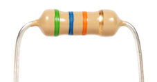

Properties and Origins of Components
Table of Contents
1 Sensors
- Sensors are input components which change their value when the surrounding conditions change.
- These are analogue input components.
Light-Dependant Resistors (LDR)
- LDRs (light-dependent resistors) are used to detect light levels, for example, in automatic security lights. Their resistance decreases as the light intensity increases:
- In the dark and at low light levels, the resistance of an LDR is high, and little current can flow through it.
- In bright light, the resistance of an LDR is low, and more current can flow through it.
- LDRs are also useful for controlling how long the shutter should remain open on a digital camera. Changes in the resistance are measured and, if the light level is low, the shutter stays open for longer than if the light level is high.
- To read more about LDRs, click on this link to go to the BBC bitesize website.
- Symbol:
Thermistor
- Thermistors are used as temperature sensors, for example, in fire alarms. Their resistance decreases as the temperature increases:
- At low temperatures, the resistance of a thermistor is high, and little current can flow through them.
- At high temperatures, the resistance of a thermistor is low, and more current can flow through them.
- Symbol:
Moisture Sensor
- Moisture sensors measure the volumetric water content.
- Moisture sensors have 2 metal probes, these probes are inserted and then a small electrical current is passed between them.
- As the moisture level increases, the electrical resistance decreases, this allows the current to increase.
- This increase in current can be detected and used to control outputs.
- A typical example of this is a soil moisture level meter. When the moisture content drops, the sensor can pick this up and turn on a water supply until the moisture level is correct again.
Piezoelectric Sensor
- A piezoelectric sensor is a device that uses the piezoelectric effect, to measure changes in pressure, acceleration, temperature, strain, or force by converting them to an electrical charge. The prefix piezo- is Greek for 'press' or 'squeeze'.

- The electric pulse can give a signal to the controller, which can then set off an alarm.
- The most common of these are microphones, these sense sound vibrations and convert them to electrical signals which can then be amplified to drive a loudspeaker.
2 Control Devices and Components
- Some components can be used to control circuits.
Single Pole Single Throw Switch (SPST)
- A Single Pole Single Throw (SPST) switch is a switch that only has a single input and can connect only to one output. This means it only has one input terminal and only one output terminal.
- A Single Pole Single Throw switch serves in circuits as on-off switches. When the switch is closed, the circuit is on. When the switch is open, the circuit is off.
- SPST switches are, thus, very simple in nature.
Resistors
- A resistor is a passive two-terminal electrical component that implements electrical resistance as a circuit element.
- A resistor is used to either protect components from too much current or to divide up the voltage or current as needed in a circuit.

- Symbol:
Push to Make Switch (PTM)
- A push to make switch allows electricity to flow between its two contacts when held in. When the button is released, the circuit is broken. This type of switch is also known as a Normally Open (NO) Switch.
=
- Symbol:
Micro Switch
- A micro switch, is an electric switch that is actuated by very little physical force, through the use of a tipping-point mechanism, sometimes called an "over-center" mechanism.
- Switching happens reliably at specific and repeatable positions of the actuator, which is not necessarily true of other mechanisms.
- They are very common due to their low cost and durability, greater than 1 million cycles and up to 10 million cycles for heavy duty models.
- This durability is a natural consequence of the design.
- The symbol is the same as that of a normal switch.
Reed Switch
- The reed switch is an electrical switch operated by an applied magnetic field.
- It consists of a pair of contacts on ferromagnetic metal reeds in a hermetically sealed glass envelope.
- The contacts may be normally open, closing when a magnetic field is present, or normally closed and opening when a magnetic field is applied.
- Symbol
Variable Resistors
- A potentiometer (variable resistor) is a three-terminal resistor with a sliding or rotating contact that forms an adjustable voltage divider. If only two terminals are used, one end and the wiper, it acts as a variable resistor or rheostat.
- An LDR is also a variable resistor. The resistance changes with the light level.
- A thermistor is also a variable resistor, the resistance changes with the temperature.
- Symbol:
Microprocessor
- A microprocessor is a computer processor that incorporates the functions of a central processing unit on a single integrated circuit (IC), or at most a few integrated circuits.A
- Microprocessors are mainly made up of silicon based transistors.
- These vary in size and complexity.
Microcontrollers
- A microcontroller is commonly known as a PIC (Peripheral Interface Controller).
- A microcontroller (MCU for microcontroller unit, or UC for μ-controller) is a small computer on a single integrated circuit.
- A microcontroller contains one or more CPUs (processor cores) along with memory and programmable input/output peripherals.
- They contain flash memory, which means we can write programs to them and then if we choose to, we can delete the program and re-write it.
- This provides the user with great flexibility as you can change to program as and when you need to.
- The PIC comes in many shapes and sizes, the one we use regularly is the Genie 08 PIC.
- The pinouts can be seen in the image, some pins can be changed as either inputs or outputs.
Relays
- A relay is an electrically operated switch. Many relays use an electromagnet to mechanically operate a switch, but other operating principles are also used, such as solid-state relays.
- Relays are used where it is necessary to control a circuit by a separate low-power signal, or where several circuits must be controlled by one signal.
- Using a relay allows the user to keep the low voltage completely seperate from the high voltage side. This keeps the user safe from harm as they are not in direct contact with the high voltage side.
- Below are some videos of a relay working.
Transistors
- A transistor is a semiconductor device used to amplify or switch electronic signals and electrical power.
- It is composed of semiconductor material usually with at least three terminals for connection to an external circuit.
- A voltage or current applied to one pair of the transistor's terminals controls the current through another pair of terminals.
- Because the controlled (output) power can be higher than the controlling (input) power, a transistor can amplify a signal.
- Symbol:
- Here is a video of the LDR and transistor working to control an LED.
- The LED turns off when the light level is reached.
3 Outputs
- Electronic outputs are devices which we can control by the system you have designed.
- Output comonents can be very simple, like and LED to far more complex devices such as LCD displays and stepper motor control.
Buzzers
- A buzzer or beeper is an audio signalling device, which may be mechanical, electromechanical, or piezoelectric (piezo for short).
- Typical uses of buzzers and beepers include alarm devices, timers, and confirmation of user input such as a mouse click or keystroke.
- Symbol:
Light-Emitting Diodes (LED)
- A light-emitting diode (LED) is a special kind of diode that glows when electricity passes through it.
- Most LEDs are made from a semi-conducting material called gallium arsenide phosphide.
- LEDs can be bought in a range of colours. They can also be bought in forms that will switch between two colours (bi-colour), three colours (tri-colour) or emit infra-red light.
- In common with all diodes, the LED will only allow current to pass in one direction.
- The cathode is normally indicated by a flat side on the casing and the anode is normally indicated by a slightly longer leg.
- The current required to power an LED is usually around 20 mA.
- The LED is a semi-conductor component.
- The colour of the LED made fade over time due to heat and age.
- Symbol:
Loudspeakers
- A loudspeaker (or loud-speaker or speaker) is an electroacoustic transducer; which converts an electrical audio signal into a corresponding sound.
- The dynamic speaker operates on the same basic principle as a dynamic microphone, but in reverse, to produce sound from an electrical signal.
- When an alternating current electrical audio signal is applied to its voice coil, a coil of wire suspended in a circular gap between the poles of a permanent magnet, the coil is forced to move rapidly back and forth due to Faraday's law of induction, which causes a diaphragm (usually conically shaped) attached to the coil to move back and forth, pushing on the air to create sound waves.
- A loudspeaker will require an amplifier to drive the coil in the speaker and produce sound.
- Symbol:
Motors
- A motor is a device which converts electrical energy into rotary motion.
- Microcontrollers can be used to turn a motor on and off as well as change the direction of the motor.
- The speed of the motor can also be controlled using PWM(Pulse Width Modulation).
- Most motors do not have a lot of torque and therefore need to be geared up or down using a gearbox.
- There are many different types of motors. Here are a few, but there are many more:
- DC motor
- AC motor
- Servo motor
- Stepper motor
- Brushless motor
4 Sources of Raw Materials Used in Systems
- When designing a product, you will need to consider the materials you are going to use in the manufacture.
- Most metals are mined from the earth in an ore form and are then processed and the metals are extracted.
- This is not an environmentally friendly process, so you will need to use as little of these materials as possible, not to mention the cost saving.
Polymers made of Crude Oil
- Crude oil can be turned into many useful products. But first, it has to be broken down. Find out more about cracking and polymers in this activity.
- Most plastics are a by-product of the oil industry.
- The most common plastics used in school are:
- Acrylic, polymethyl methacrylate.
- HIPS, High-impact polystyrene.
- ABS, acrylonitrile butadiene styrene (used in the 3D printer).
- PVC, polyvinyl chloride.
- Crude oil is found underground in place around the world, incluing the U.K.
- The biggest suppliers of oil are, Russia, USA and Saudi Arabia.
- To read more about this, click on the BBC bitesize link here.
Silicon
- Silicon is a semi-conductor material. This means it can be turned into a conductor or insulator depending on the impurities that are added.
- Silicon is the most common material used in electronic components.
- It is sliced into very thin wafers and formed into electronic components.
- THe biggest produces of silicon are China, Russia and the USA.
Gold
- Gold is a chemical element with symbol Au (from Latin: aurum) and atomic number 79, making it one of the higher atomic number elements that occur naturally.
- Gold is a very expensive metal which is an excellent conductor of electricity.
- It is generally used where components need to touch up against each other and make an electrical connection without soldering. For example: headphone sockets.
- The gold is generally plated onto a much cheaper metal.
- Gold will tarnish over time, this will impede the electrical connection and will therefore need cleaning.
- Gold is also a very soft metal, therefore if the connection requires a lot of mechanical strength, gold will not be suitable.
- The biggest producers of gold are, China, Russia and Australia.
Copper
- Copper is a chemical element with symbol Cu (from Latin: cuprum) and atomic number 29. It is a soft, malleable, and ductile metal with very high thermal and electrical conductivity. A freshly exposed surface of pure copper has a reddish-brown colour.
- Copper is the most common metal used in electrical wiring and connectivity.
- Copper is malleable, it is a soft metal which is able to bend and stretch, making it excellent for electrical cables.
- Most countries in the world produce Copper, but the biggest producers at the moment are Chile, China and Peru.
- The UK used to mine Copper in Wales and Cornwall, but there are no active Copper mines left in the UK.
Lithium
- Lithium is a chemical element with symbol Li and atomic number 3. It is a soft, silvery-white alkali metal.
- Under standard conditions, it is the lightest metal and the lightest solid element.
- Like all alkali metals, lithium is highly reactive and flammable, and is stored in mineral oil.
- In electronics, we have used Lithium in large quantities in the production of batteries. Mainly Lithium-ion batteries found in mobile phones, laptops and more recently in electric cars.
- The largest producers of Lithium are Australia, Chile and Argentina.
Aluminium
- Aluminium is a chemical element with symbol Al and atomic number 13.
- It is a silvery-white, soft, nonmagnetic and ductile metal in the boron group.
- By mass, aluminium makes up about 8% of the Earth's crust; it is the third most abundant element after oxygen and silicon and the most abundant metal in the crust, though it is less common in the mantle below.
- The chief ore of aluminium is bauxite.
- Due to the metal being very lightweight comparatively to steel and its corrosion resistance, it is used widely in the aircraft and car industries.
- It is also used as cables in high voltage power lines between pylons as it is very light.
- Aluminium is produced around the world, but the largest manufacturers are China, Russia and Canada.
Nickel
- Nickel is a chemical element with symbol Ni and atomic number 28.
- It is a silvery-white lustrous metal with a slight golden tinge. Nickel belongs to the transition metals and is hard and ductile.
- Nickel has many uses and is used to produce many alloys (mixture of metals) such as Stainless steel, magnets and coins.
- Nickel is highly corrosion resistant, so it is often used to electroplate other metals to protect them.
- In the past, nickel was used in batteries to produce Nickel-Cadmium rechargeable batteries (NiCad). These have since been replaced by the Lithium-ion batteries.
- The largest producers of Nickel are, the Philippines, Indonesia, Russia, Canada and Australia.
Rare Earth Elements
- Rare earth metals (REEs) are metals that can be found at the bottom of the periodic table.
- For example, Lanthanum, Praseodynmuim, Neodymium, Promethuim and Lutetuim. These all have unusual names.
- These materials are being increasingly used in devices such as car batteries, lasers, wind turbines, medical scanners and additives in specialist alloys.
- Most rare earth materials are mined in China, with smaller amounts coming from the USA and Australia.
5 Physical Characteristics
Resistor Colour Codes

Tolerance
- The fourth color band indicates the resistor's tolerance.
- Tolerance is the percentage of error in the resistor's resistance, or how much more or less you can expect a resistor's actual measured resistance to be from its stated resistance.
- A gold tolerance band is 5% tolerance, silver is 10%, and no band at all would mean a 20% tolerance.
- Tolerance = value of resistor x value of tolerance band = 220 Ω x 10% = 22 Ω
- 220 Ω stated resistance +/- 22 Ω tolerance means that the resistor could range in actual value from as much as 242 Ω to as little as 198 Ω.
- Try work out the following resistor colour codes:
- What colour bands would be needed to produce the following resistor values?
- 200Ω +/- 10%
- 18kΩ +/- 5%
- 10MΩ +/- 20%
- 2k2Ω +/- 5%
- What is the value of the resistor for the following values?
- Brown Black Red Gold
- Orange Orange Brown Gold
- Green Blue Orange Silver
- Yellow Violet Red Silver
Material selection for case construction
- When design a case for your product, there are many choices available to you.
- Metals.
- Plastics.
- Different types of woods.
- Man made boards (e.g. MDF and Plywood)
- Modern composite materials (e.g. carbon fibre).
- Every material will have strengths and weaknesses. Some will be expensive, some will be very strong, some will not conduct electricity.
- All of these factors will need to be considered when choosing the right material for your product.
- Here are some points to think about:
- The purpose of the product.
- How and where the product will be used?
- How much will the product cost (to make and sell)?
- How many do you intend to produce?
- How will the product be disposed of after it use (is it environmentally friendly)?
- All of these questions will help you develop a specification and decide what is the most suitable material for your product.
6 Working Properties
- A designer needs to understand the working properties of materials. This will allow them to choose the right materials for the product.
Conductors and insulators
- A conductor is an object or type of material that allows the flow of an electrical current in one or more directions. Materials made of metal are common electrical conductors.
- An insulator is a material or an object that does not easily allow heat, electricity, light, or sound to pass through it. Air, cloth and rubber are good electrical insulators; plastics, feathers and wool make good thermal insulators.
Polymers
- Polymers are very large molecules made when many smaller molecules join together, end-to-end. The smaller molecules are called monomers. In general:
- lots of monomer molecules → a polymer molecule
- Read more about polymers by clicking on the BBC bitesize link.
- Plastics are used in electronics as they have the following properties:
- They are good insulator and will not interfere with the electronic circuit.
- They are cheap and easily moulded into complex shapes.
- The can be made into many different colours.
- Plastics have the following properties:
- They are durable and do no get damaged easily by water and sunlight.
- Plastics are very hard and therefore scratch easily. Other materials can be better at this.
- Some plastics are harder than others and can withstand knocks better.
- Some plastics are more rigid than others and therfore crack easily. The more elasticity a plastic has, the better it can stretch and absorb an impact. These are often soft and rubbery.
7 Social Footprint
- Some materials are very rare and can only be found in small quantities in remote locations around the world.
- These materials will be more expensive do to their scarcity.
Relying on Scarce Elements
- The following are scarce elecments:
- Lithium, this is used in batteries in products such as, mobile phones in large quantities as well as laptops and more recently in electric cars. As the mine starts to run out, this will have and impact on its cost as well as the livelyhoods of the people working in the mines.
- Cobalt, mainly used in alloy metals to improve its performance. Cobalt is used as it has a high resistance to heat and is therefore used largely in the production of turbine blades in aircraft engines. Cobalt mainly come from Africa where there is often pollitical conflict as well as the use of child labour.
- Tantalium, this is largely used in the production of capacitors. Which are used in a wide range of electronic products, such as mobile phones and laptop. Allowing the products to be smaller. Most of this now comes from Australia, but it is still mined in Africa, especially the DRC. The money is often used to fun conflicts in the region.
Effects of using Modern Systems
- Electronic systems have improved our lives greatly, allowing us to store and access vast amounts of data very quickly.
- This has also all been linked up using the internet which has allowed us to communicate world wide, access information and more recently purchase and sell products online.
- There has also been rise in the misuse of this data.
- This progress has come with downsides, for example:
- Online shopping has led to the closures of many small businesses and therefore people have lost their jobs and income.
- Many jobs are being replaced with computer systems which can run more efficiently and 24 hours a day compared to a human being.
- There has been the invent of cyber crime, which has increased rapidly, often more quickly than can be policed. This has led to people loosing vast somes of money along with other more serious crimes.
- This has led to the need to have cyber security from large companies right down to your own personal computers to try combat this.
8 Ecological Footprint
- As you produce a product, yo uwould need to consider the entire lifecycle of the product.
- From the mining of the raw materials, to its transports to and from the customer.
- The manufacturing process, its use and how long it will be used for.
- Its disposal at the end of the process.
- This is called the product life cycle.
Effects of Material Extraction and Processing of elements
- The mining process used to extract most metals and other materials has a cost to the environment.
- Large amounts of energy is used in the mining process as well as the processing of the raw materials, e.g. heating the metals to melt them into ingots.
- Some processes release toxic chemicals into the earth, water or air, this could be very harmful to humans and animals alike.
- this entire process will need to be carefully monitored by outside agencies to ensure the local envionment is not damaged. Including the burning of fossil fuels contributing to global warming.
Effects of Built-in Obsolescence
- Many product are developed by a manufacturer with a built in obsolescence. This means they determine the life cycle of the product.
- Mobile phone manufacturers are a good example of this. When a new phone is released, they will in time stop supporting the older models until the older models are no longer able to work due to software upgrades.
- The old mobile phone might be in excellent condition and still operate well, but the phone will no longer work as the software does not support it.
- This has then been planned by the manufacturer with a built-in timescale for its obsolesence.
- Once the product becomes obsolete, it is then thrown away. This timescale is often way less than is needed to make the product not have an environmental impact.
Effects of use
- Some products will have an impact on the environment purely as you use them.
- Cars are a good example of this. As you use a vehicle, it will burn fossil fuels and pollute the atmosphere in order for it to work.
- Electric cars are not free from this as the electricity needed to recharge them is often genertated from coal fired power stations.
Disposal of Electronic Products
- Once you finished using an electronic product, it will need to be disposed of correctly.
- Electronic products are often very difficult to recycle as they are made up of many different materials, often scarce ones to.
- To recycle them correctly, they will need to be stripped down to their bare parts and then recycled. Often these product contain very valuable materials, such as gold.
- To materials in the products can also be toxic or heavy metals such as Lead which need to be disposed of safely.
- There is a directive used for the disposal of electrical watse known as the WEEE directive. You will learn more about this later in the course.
- As this is a complex process, it is understandably very expensive, putting many countries off from recycling correctly. Therefore a lots of electronic waste still ends up in landfill, where they will slowly degrade and leach into the soil.
- These materials can be very harmful to the environment and the food chain.
- Some products also contain poisonous chemicals such as polymers which do not bio-degrade and if burned, release toxic chemicals into the ground.
9 Practice Questions and Key terms
Key terms
- Conduct: To allow electricity or heat to flow through it.
- Piezoelectric: Pressure put on a crystal causing a small eletrical pulse.
- Normally off: The switch is off in its normal state and turns on when activated.
- Normally on: The switch is on in its normal state and turns off when activated.
- Flash Memory: A memory that can store information, then be wiped clean and store differnet information repeatedly.
- Program: A set of instructions that the controller follows to make the system work.
- Semi-conductor: A material that allows electricity to flow under certain conditions. It can behave as an insulator or conductor.
- Electromagnet: A coil of wire wrapped around an iron core that becomes magnetic when electricity flows through the coil.
- Amplifier: An electronic circuit that makes a small electrical signal more powerful, used to power a loudspeaker.
- Ore: Rock that contains metal.
- Tarnish: A thin film that forms on the surface of a metal when it reacts with oxygen in the air. It often makes the metal look duller in colour.
- Electroplate: A metal object is dipped into a solution of the coating metal and electricity is passed through it. The metal object becomes coated with a thin film of the coating metal.
- Corrosion: The metal is eaten away as it reacts with oxygen and water in the air. Rust is formed through the corrosion of iron or steel.
- Tolerance: Sets an upper and lower acceptable limit for a measurement of something.
- Conductor: Lets energy flow through it easily. All metals are good electrical conductors.
- Elasticity: How easily the material can stretch and return to its original shape.
- Product life cycle: The life cycle of a product starts with obtaining raw materials, manufacturing the product, selling it, using it and finally disposing of it when it is finished with.
Practice Questions
- Name three input devices a system could have.
- Write out the resistor colour code.
- Explain the term tolerance?
- What are the effects of using modern systems?
- Explain why using Cobalt could be a problem for manufacturers.